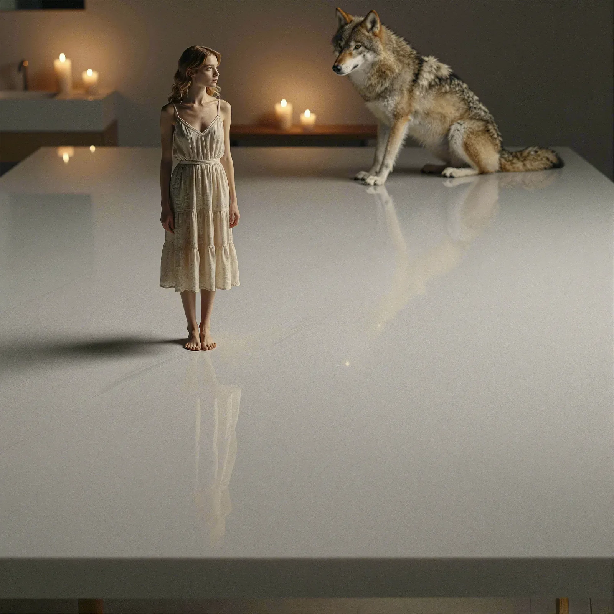
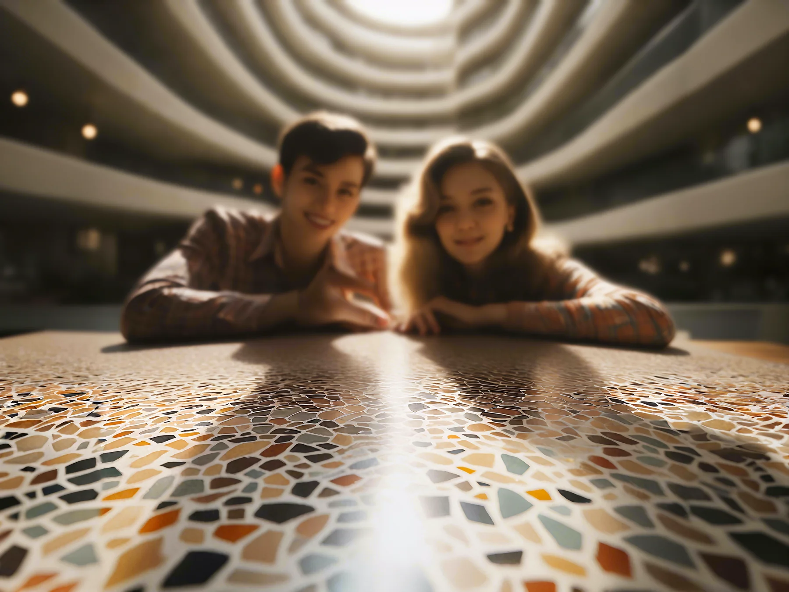
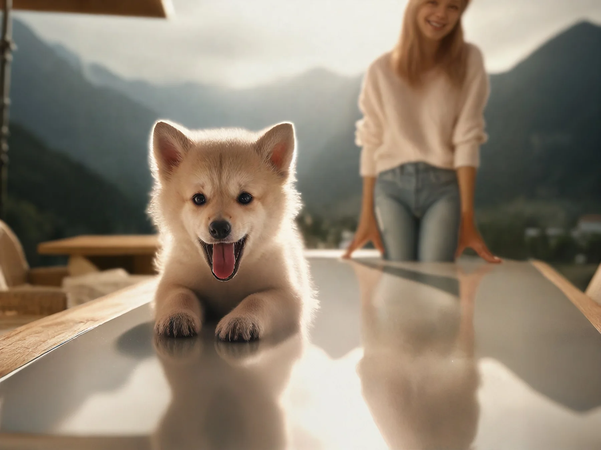
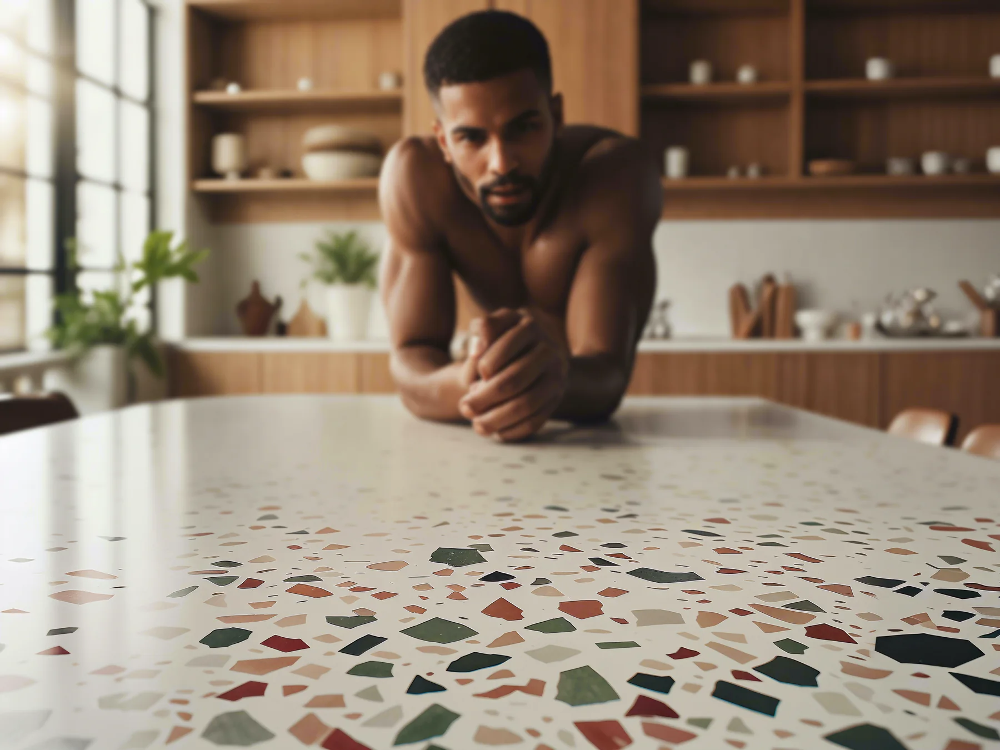

Intent
Teach a composition, not a person.
The training target was a repeatable point of view: the camera sits close to a foreground surface while the subject remains readable deeper in frame. It was developed for ProductBackground, where reusable composition control helps a product-imaging workflow survive changing subjects, products, and scenes.
Direct comparison
A visible change in camera logic.

Selected tests
One concept across different scenes.



Learning
Control becomes useful when it transfers.
The useful result is not one image, but a learned visual instruction that can be tested, rejected, and applied again. Any facial resemblance in this test set is an incidental property of the training material, not the intended identity target.